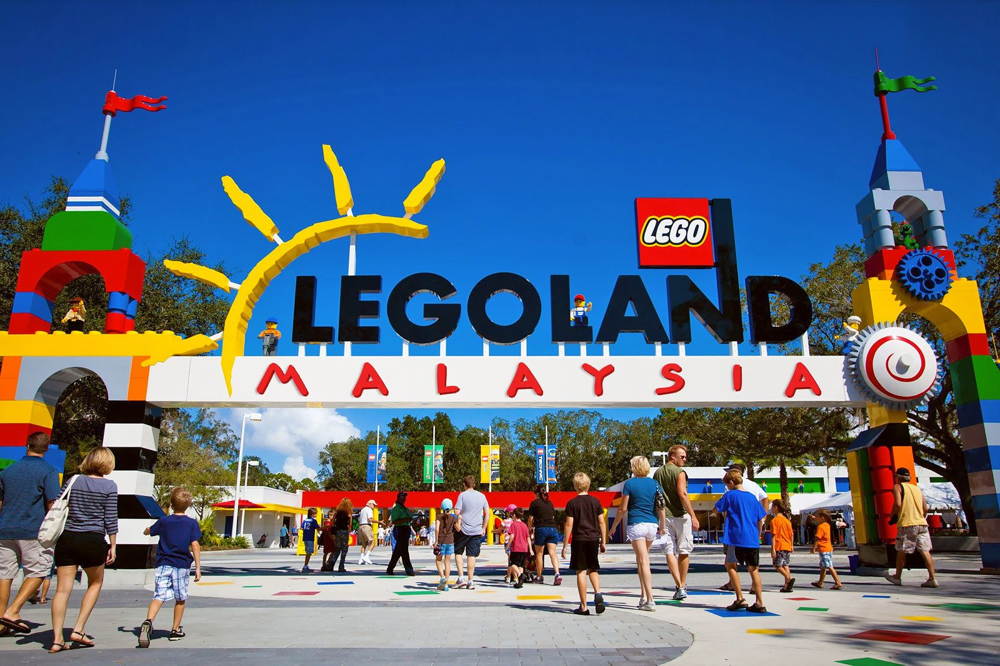
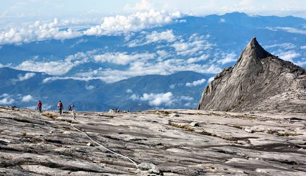

Overview
Malaysia, southeast Asian nation, located just north of the Equator, is composed of two Peninsular Malaysia (Semenanjung Malaysia), sometimes called West Malaysia (Malaysia Barat), which is on the Malay Peninsula, and East Malaysia (Malaysia Timur), which lies on the island of Borneo. Malaysia, a member of the Commonwealth, represents the political marriage of territories that were formerly under British rule. When it was established on September 16, 1963, Malaysia comprised the territories of Malaya (now Peninsular Malaysia), the island of Singapore, and the colonies of Sarawak and Sabah in northern Borneo. In August 1965 Singapore seceded from the federation and became an independent republic.
Quick Facts
💬 Language: Malay,
💴 Currency: Ringgit Malaysia (RM)
🕌 Religion: Islam
🏢 Capital: Kuala Lumpur
🌍 Climate: high temperatures and humidities, abundant rainfall, and a climatic year designed around the northeast and southwest monsoons.
Budget
An approximate budget of $84 per day should be set up for your Malaysian holiday. Based on the costs incurred by previous guests, this represents the average daily rate. The average cost of a one-week trip to Malaysia for two individuals is $1,178. This covers lodging, meals, local transit, and sightseeing. Your travel style, pace, and other factors may affect the price. When travelling as a family of three or four, the cost per person generally decreases since shared hotel rooms and lower tickets for children are available. Over an extended duration of slower travel, your daily budget will decrease as well. A couple spending a month together in Malaysia will often spend less per day per person than a single traveller spending a week by themselves.
Interesting Places in China
Kuala Lumpur
- In Kuala Lumpur, Malaysia, the 451.9-meter-tall Petronas Towers, usually referred to as the Petronas Twin Towers or simply the KLCC Twin Towers, are two connected, ultra-tall buildings with 88 stories. Between 1998 and 2004.

Petronas Twin Towers
- Built on the location of the original Bukit Bintang Girls' School, which was relocated to Cheras as Sekolah Seri Bintang Utara in 2000, Pavilion Kuala Lumpur is the oldest school in Kuala Lumpur. Opened on 20 September 2007, the complex comprises of a premium shopping mall, two blocks of serviced apartments, an office building and a 5-star hotel.

Pavilion KL
Johor
- 
- In Iskandar Puteri, Johor, Malaysia, there is a theme park called Legoland Malaysia Resort. With more than 40 interactive rides, shows, and activities, it debuted on September 15, 2012. At the time of its founding, it was the sixth Legoland theme park worldwide and the first in Asia. On September 22, Johor Sultan Ibrahim Ismail formally launched Legoland Malaysia.
Legoland Malaysia
Sabah
- 
- The tallest peak in Malaysia and Borneo is Mount Kinabalu. At 4,095 metres, it ranks as the 20th most famous mountain worldwide and the third-highest peak on an island. The mountain is situated in Sabah, Malaysia's West Coast Division's Ranau district. As a World Heritage Site, Kinabalu Park provides protection for it.